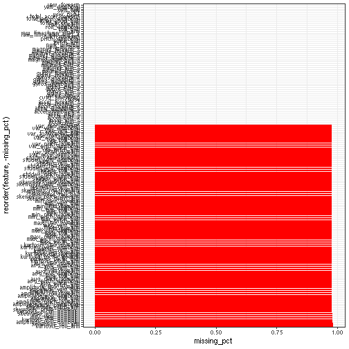

# Introduction

This project will attempt to identify exercise regimes followed from biological data. This will
give us a guide to what is necessary for proper development.

Goal: to identify the exercise regime identified in the classe variable.


```r
pacman::p_load(tidyverse,
               magrittr,
               caret,
               doParallel)

train <- read_csv("./data/pml-training.csv")
test  <- read_csv("./data/pml-testing.csv")

train$classe <- train$classe %>% as.factor

set.seed("1701")
```

# Exploratory data analysis

The training data for this project has 19622 entries, belonging
to 6. We are interested in using this data to predict
how 20 entries should look.

In a quick test to check distribution of NAs, 2/3rds of the columns are nearly entirely NA, with
only some data. None are entirely NAs though.


```r
missing.values.count <- train %>%
    dplyr::summarize_all(funs(sum(is.na(.))/dim(train)[1]))
missing.values.count <-
    gather(missing.values.count, key="feature", value="missing_pct")
missing.values.count %>%
    ggplot(aes(x=reorder(feature,-missing_pct),y=missing_pct)) +
    geom_bar(stat="identity",fill="red")+
    coord_flip()+theme_bw()
```



Further examination of the data shows that the same rows have NAs (Fig. 1). If one row has NAs, others will
too. I am unsure how to make the best use of this information so I will remove these NAs.


```r
missing.values <- apply(train, 2, function(x) mean(is.na(x))) > 0.95
train.cc          <- train[, -which(missing.values, missing.values == FALSE)]
test.cc           <- test[, -which(missing.values, missing.values == FALSE)]
```

We also need to handle near zero variances (NZV). Additionally, the first 5 columns are of useless information.


```r
NZV      <- nearZeroVar(train.cc)
train.cc <- train.cc[ ,-NZV]
test.cc  <- test.cc[ ,-NZV]

train.cc <- train.cc[ , -(1:5)]
test.cc  <- test.cc[ , -(1:5)]
```

And finally, to test my models capabilities, I will split the training data set 80-20. The model
will be trained on the 80%, and tested on the 20%, before being applied to data in question
(test).


```r
trainIndex <- caret::createDataPartition(train.cc$classe,
                                         p = .8,
                                         list = FALSE,
                                         times = 1)
train.cc80 <- train.cc[trainIndex,]
train.cc20 <- train.cc[-trainIndex,]
```


# Classification

We are interested in a model capable of predicting the classe. For this, we will compare between
random forest and gbm. Two robost algorithim. They will be used with the kappa metric. Finally,
cross-validation will be completed between the two models. Both models will be repeated with k-fold
10.


```r
#if (exists("rf_fit")) {
#    rf.fit <- readRDS("fit.rds")
#} else {
    cl <- makePSOCKcluster(5)
    registerDoParallel(cl)

    fitControl <- caret::trainControl(method = "cv",
                                      number = 10)
    rf.fit <- caret::train(classe~.,
                           data=train.cc80,
                           method="rf",
                           metric="Kappa",
                           trControl=fitControl)

    stopCluster(cl)
#    saveRDS(rf.fit, file = "fit.rds")
#}
```

```r
#if (!exists("gbm.fit")) {
#    gbm.fit <- readRDS("gbm.rds")
#} else {
cl <- makePSOCKcluster(5)
    registerDoParallel(cl)

fitControl <- caret::trainControl(method = "cv",
                                      number = 10)

gbm.fit <- train(classe ~ .,
                 data = train.cc80,
                 method = "gbm",
                 metric = "Kappa",
                 trControl = fitControl,
                 verbose = FALSE)

    stopCluster(cl)
#    saveRDS(rf.fit, file = "gbm.rds")
#}
```

looking at the resulting models, we get:


```r
rf.fit
```

```
## Random Forest 
## 
## 15699 samples
##    53 predictor
##     5 classes: 'A', 'B', 'C', 'D', 'E' 
## 
## No pre-processing
## Resampling: Cross-Validated (10 fold) 
## Summary of sample sizes: 14129, 14129, 14129, 14128, 14129, 14130, ... 
## Resampling results across tuning parameters:
## 
##   mtry  Accuracy   Kappa    
##    2    0.9958594  0.9947624
##   27    0.9979616  0.9974217
##   53    0.9962414  0.9952456
## 
## Kappa was used to select the optimal model using the largest value.
## The final value used for the model was mtry = 27.
```

```r
#gbm.fit

library(lattice)
resample.result <- caret::resamples(list(rf = rf.fit, gbm = gbm.fit))
summary(resample.result)
```

```
## 
## Call:
## summary.resamples(object = resample.result)
## 
## Models: rf, gbm 
## Number of resamples: 10 
## 
## Accuracy 
##          Min.   1st Qu.    Median      Mean   3rd Qu.      Max. NA's
## rf  0.9961759 0.9974510 0.9980900 0.9979616 0.9987269 0.9993631    0
## gbm 0.9840866 0.9859806 0.9875711 0.9877064 0.9890127 0.9929936    0
## 
## Kappa 
##          Min.   1st Qu.    Median      Mean   3rd Qu.      Max. NA's
## rf  0.9951632 0.9967759 0.9975839 0.9974217 0.9983900 0.9991943    0
## gbm 0.9798680 0.9822655 0.9842752 0.9844480 0.9861021 0.9911374    0
```

Interestingly, both models have a relatively high accuracy. This assignment will continue using the
random forest model. This approach will proceed. It also seems to have high sensitivity and
specificity when applied to the split data. Finally, error can be found using 'confusionMatrix'.


```r
results <- c()
results$predicted <- predict(rf.fit,newdata = train.cc20)
results$classe <- train.cc20$classe
results <- as.data.frame(results)
print("number of incorrectly predicted rows:")
```

```
## [1] "number of incorrectly predicted rows:"
```

```r
length(which(results$predicted != results$classe))
```

```
## [1] 6
```

```r
caret::confusionMatrix(train.cc20$classe, predict(rf.fit, newdata = train.cc20))
```

```
## Confusion Matrix and Statistics
## 
##           Reference
## Prediction    A    B    C    D    E
##          A 1116    0    0    0    0
##          B    2  756    1    0    0
##          C    0    2  682    0    0
##          D    0    0    1  642    0
##          E    0    0    0    0  721
## 
## Overall Statistics
##                                           
##                Accuracy : 0.9985          
##                  95% CI : (0.9967, 0.9994)
##     No Information Rate : 0.285           
##     P-Value [Acc > NIR] : < 2.2e-16       
##                                           
##                   Kappa : 0.9981          
##                                           
##  Mcnemar's Test P-Value : NA              
## 
## Statistics by Class:
## 
##                      Class: A Class: B Class: C Class: D Class: E
## Sensitivity            0.9982   0.9974   0.9971   1.0000   1.0000
## Specificity            1.0000   0.9991   0.9994   0.9997   1.0000
## Pos Pred Value         1.0000   0.9960   0.9971   0.9984   1.0000
## Neg Pred Value         0.9993   0.9994   0.9994   1.0000   1.0000
## Prevalence             0.2850   0.1932   0.1744   0.1637   0.1838
## Detection Rate         0.2845   0.1927   0.1738   0.1637   0.1838
## Detection Prevalence   0.2845   0.1935   0.1744   0.1639   0.1838
## Balanced Accuracy      0.9991   0.9982   0.9982   0.9998   1.0000
```


# Results


```r
finalResults <- predict(rf.fit, newdata = test)
print(finalResults)
```

```
##  [1] B A B A A E D B A A B C B A E E A B B B
## Levels: A B C D E
```

As the significance from the earlier steps is high, this is the solution.
